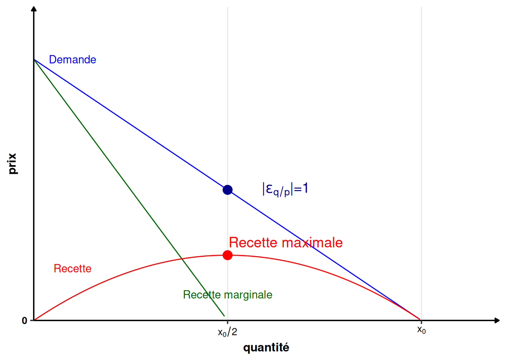
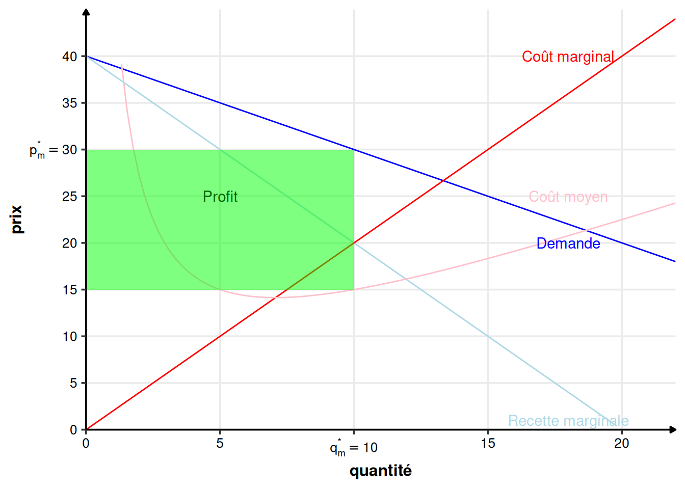
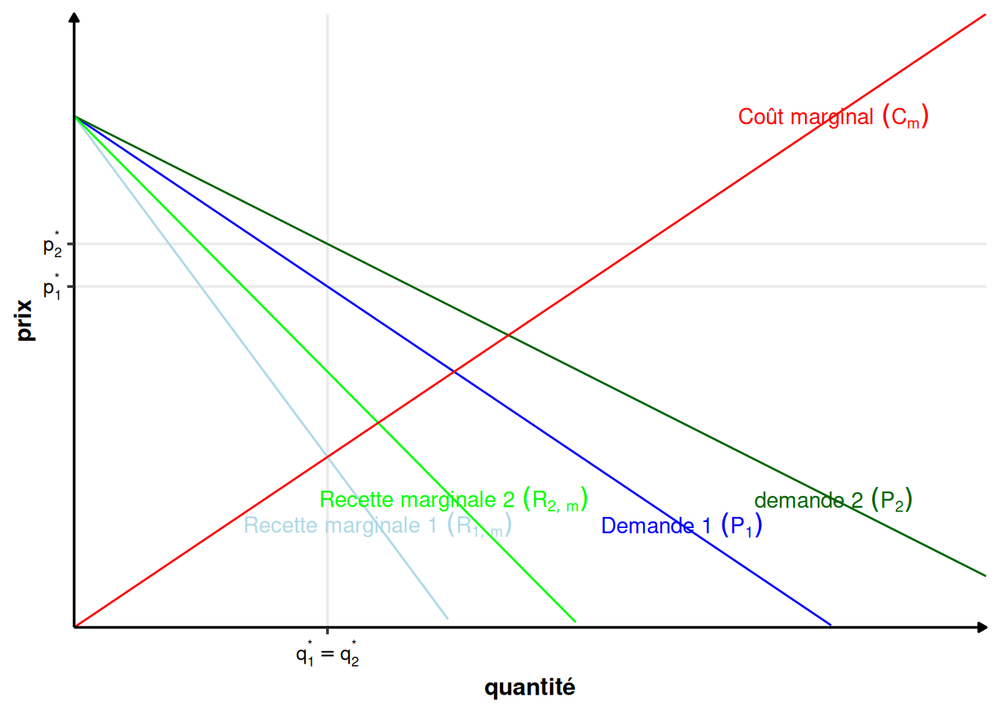
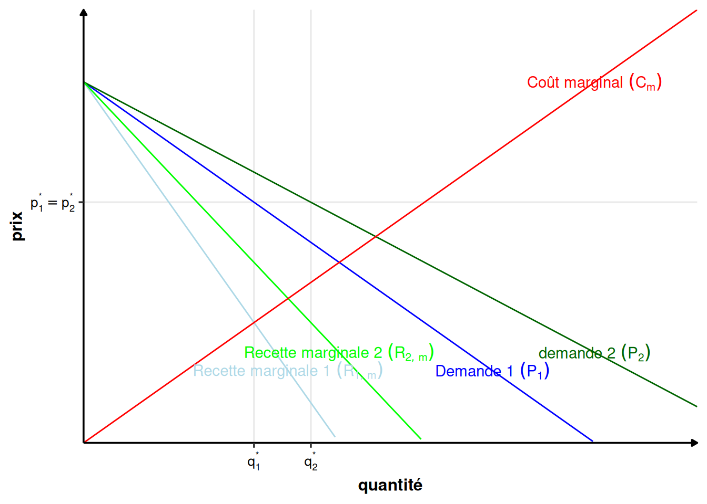
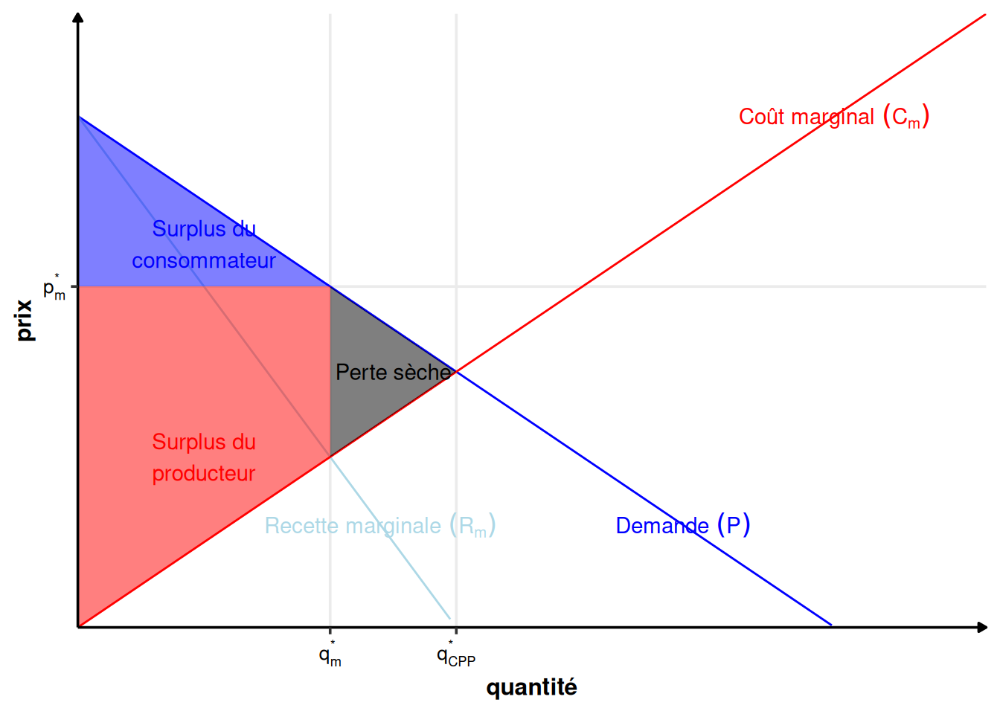
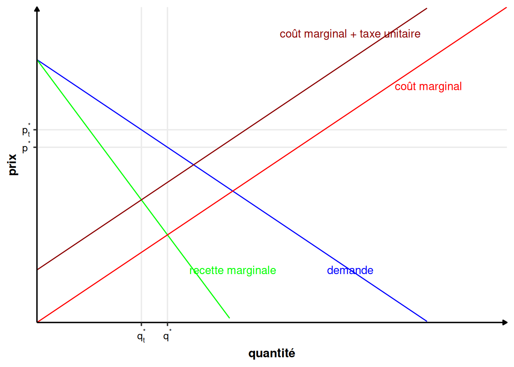
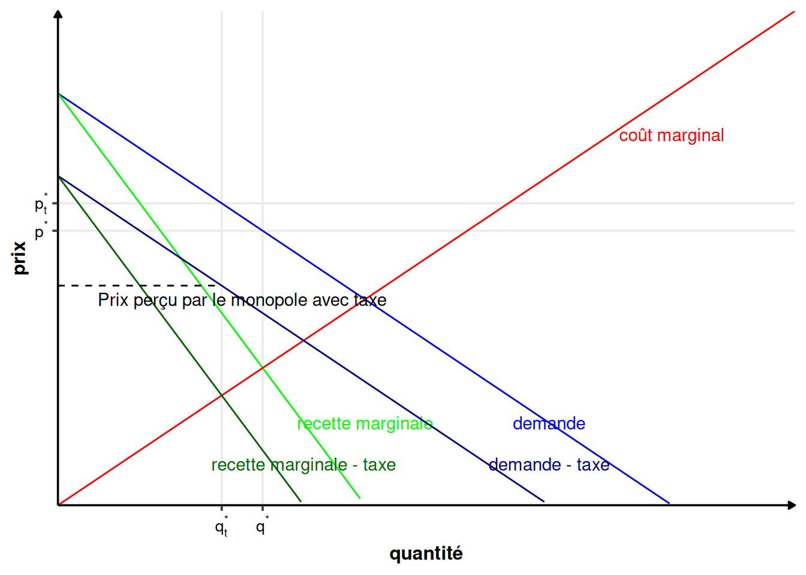

library(ggplot2)2 Le monopole
theme_perso <- function(base_size = 14) {
theme_bw(base_size = base_size) %+replace%
theme(
# L'ensemble de la figure
plot.title = element_text(size = rel(1), face = "bold", margin = margin(0,0,5,0), hjust = 0),
# Zone où se situe le graphique
panel.grid.minor = element_blank(),
panel.border = element_blank(),
# Les axes
axis.title = element_text(size = rel(0.85), face = "bold"),
axis.text = element_text(size = rel(0.70), face = "bold"),
axis.line = element_line(color = "black", arrow = arrow(length = unit(0.3, "lines"), type = "closed")),
# La légende
legend.title = element_text(size = rel(0.85), face = "bold"),
legend.text = element_text(size = rel(0.70), face = "bold"),
legend.key = element_rect(fill = "transparent", colour = NA),
legend.key.size = unit(1.5, "lines"),
legend.background = element_rect(fill = "transparent", colour = NA),
# Les étiquettes dans le cas d'un facetting
strip.background = element_rect(fill = "#17252D", color = "#17252D"),
strip.text = element_text(size = rel(0.85), face = "bold", color = "white", margin = margin(5,0,5,0))
)
}
theme_set(theme_perso())Définition 2.1 (Monopole) Un monopole est sur un marché donné l’unique entreprise qui produit le bien.
C’est le cas extrême opposé à la concurrence pure et parfaite, du côté du producteur. Il est intéressant à étudier car il nous renseigne sur les principaux aspects du comportement des entreprises dans les cas intermédiaires.
Il y a de nombreuses raisons qui aboutissent à l’existence de monopoles. Les principales sont :
- Légales, à cause de réglementation particulières. C’est ce qu’on appelle en général des professions réglementées, comme les avocats, les bureaux de tabac, les taxis…
- Légales, à cause des brevets sur une technologie donnée (industrie pharmaceutique, …) ;
- Historique, le premier arrivé ;
- Monopoles naturels : en présence d’économies d’échelles, produire une quantité donnée revient moins cher avec un seul producteur qu’avec plusieurs. C’est notamment les cas des industries où il faut installer des réseaux (chemins de fer, électricité, téléphone, …). Plus généralement, les industries avec des coûts fixes ou des coûts d’entrées très élevées aboutissent à des formes proches du monopole naturel (sidérurgie, automobile, semi-conducteurs…) ;
- Exclusivité sur la production de certaines matières premières (cuivre au Chili, terres rares en Chine, …) ;
- Coalitions créant un cartel ;
- …
2.1 Recette et recette marginale
2.1.1 Définition
L’avantage du monopole sur des entreprises en concurrence pure et parfaite est qu’il connaît tout le marché. Il peut influencer le prix sur le marché, en modifiant son prix de vente ou la quantité vendue. Cela permet au monopole de percevoir la vraie courbe de demande agrégée et non plus une courbe de demande avec une élasticité infinie. Le choix de la quantité qu’il met sur le marché modifie le prix auquel il pourra vendre sa production et il le sait. Il va choisir un des paramètres du couple \((q^*, p^*)\) du prix et de la quantité sur le marché. L’autre en découlera, à travers la demande inverse \(P(q)\) ou la demande \(Q(p)\). Autrement dit, s’il choisit \(q^*\), le prix sur le marché \(p^*\) sera déterminé par le demande inverse (\(p^*=P(q^*)\)). Si, au contraire, il choisit \(p^*\), la quantité échangée \(q^*\) sera déterminée par la demande (\(q^*=Q(p^*)\)).
En CPP, la recette totale du producteur individuel était \(R(q) = q\cdot P(q^*)\), où \(q\) est sa production individuel, \(q^*\) la quantité d’équilibre sur le marché (résultat de la production de toutes les entreprises présentes sur le marché) et \(P(q^*)=p^*\) est le prix d’équilibre.
En monopole, le prix dépend de la production du monopole (ou l’inverse, peu importe). La recette totale du monopole s’écrit donc : \[ R(q) = q\cdot P(q) \text{ ou } R(p)= Q(p)\cdot p \]
2.1.2 Recette marginale et courbe de demande
Remarque (Élasticité prix de la demande). L’élasticité prix de la demande \(\varepsilon_{q/p}\) s’écrit : \[\varepsilon_{q/p}(p)=\frac{p}{Q(p)}Q'(p) <0\] Où \(Q\) est la fonction de demande. Elle est toujours négative, car la demande diminue quand le prix augmente. On peut la réécrire à l’aide de la fonction de demande inverse \(P\). Comme \(Q\) et \(P\) sont les fonctions réciproques l’une de l’autre, on a \(Q(P(q)) = q\). En dérivant à gauche et à droite et en utilisant la formule de la dérivation composée, on obtient : \[P'(q)Q'(P(q)) = 1\] On obtient donc : \[P'(q)=\frac{1}{Q'(p)}\] Et l’élasticité prix de la demande peut aussi s’écrire : \[\varepsilon_{q/p}(q)=\frac{P(q)}{q}\frac{1}{P'(q)}\]
Comme la demande est décroissante (l’élasticité prix de la demande est négative \(\varepsilon_{q/p} <0\)), \(P(q)\) et \(q\) ont une relation inverse. Autrement dit, si \(q\) augmente, alors \(p\) baisse et inversement. On peut constater sur la figure 2.1 que deux phénomènes influencent la variation de la recette totale quand on augmente la production d’une unité (passage de \(q\) à \(q+\Delta q\) unités vendues). Le gain lié à la vente de \(\Delta q\) unités supplémentaires. La perte due à la baisse du prix de vente total de toutes les unités vendues (passage de \(P(q)\) à un prix inférieur \(P(q+\Delta q)\)).
p1 <- p
lab1 <- expression(P(q+Delta*q))
lab2 <- expression(q+Delta*q)
p1 + scale_y_continuous(breaks = c(0.1, 0.2, 0.8, 0.9), labels = c(lab1, 'P(q)', lab1, 'P(q)'), expand = c(0, 0), limits = c(0, 1.2)) +
scale_x_continuous(breaks = c(0.1, 0.2, 0.8, 0.9), labels = c('q', lab2, 'q', lab2), expand = c(0, 0), limits = c(0, 1.2)) +
geom_segment(x=0.9, y=0, xend = 0.9, yend = 0.1, linetype="dashed") +
geom_segment(x=0.8, y=0, xend = 0.8, yend = 0.2, linetype="dashed") +
geom_segment(x=0.2, y=0, xend = 0.2, yend = 0.8, linetype="dashed") +
geom_segment(x=0.1, y=0, xend = 0.1, yend = 0.9, linetype="dashed") +
geom_segment(x=0, y = 0.9, xend = 0.1, yend = 0.9, linetype="dashed") +
geom_segment(x=0, y = 0.8, xend = 0.2, yend = 0.8, linetype="dashed") +
geom_segment(x=0, y = 0.2, xend = 0.8, yend = 0.2, linetype="dashed") +
geom_segment(x=0, y = 0.1, xend = 0.9, yend = 0.1, linetype="dashed") +
geom_ribbon(data = S1, aes(x=x, ymin=0.8, ymax = y), fill="red", alpha = 0.5) +
geom_ribbon(data = S2, aes(x=x, ymin=0, ymax = y), fill="green", alpha = 0.5) +
geom_ribbon(data = S3, aes(x=x, ymin=0.1, ymax = y), fill="red", alpha = 0.5) +
geom_ribbon(data = S4, aes(x=x, ymin=0, ymax = y), fill="green", alpha = 0.5) +
annotate("text", x=0.05, y=0.85, label="-", colour="darkred", size = rel(10)) +
annotate("text", x=0.4, y=0.15, label="-", colour="darkred", size = rel(10)) +
annotate("text", x=0.15, y=0.4, label="+", colour="darkgreen", size = rel(10)) +
annotate("text", x=0.85, y=0.05, label="+", colour="darkgreen", size = rel(10))Warning: Removed 17 rows containing missing values or values outside the scale range
(`geom_function()`).
Quel est le paramètre important de la courbe de demande qui détermine si le revenu \(R\) augmente ou diminue (c’est-à-dire si la recette marginale \(R_m\) est positive ou négative) ?
\[\begin{align*} R(q) & = qP(q)\\ R_m(q)& = R'(q) \\ & = \left(qP(q)\right)' \\ & = P(q) + qP'(q) \\ & = P(q)\left(1 + \frac{q}{P(q)}P'(q) \right)\\ & = P(q)\left(1 + \frac{1}{\varepsilon_{q/p}(q)}\right) \end{align*}\]
On peut donc écrire : \[ R_m(q) = P(q)\left(1 - \frac{1}{|\varepsilon_{q/p}(q)|}\right) \tag{2.1}\]
Proposition 2.1 (Élasticité prix de la demande et recette marginale) De l’équation 2.1, on observe que le signe de la recette marginale \(R_m\) dépend de l’élasticité prix de la demande \(|\varepsilon_{q/p}(q)|\).
- Si la demande est élastique (\(|\varepsilon_{q/p}(q)|>1\)), alors \(R_m(q)>0\), donc si la quantité augmente, le revenu augmente.
- Si la demande est inélastique (\(|\varepsilon_{q/p}(q)|<1\)), alors \(R_m(q)<0\), donc si la quantité augmente, le revenu diminue.
La figure 2.2 représente les différentes zone pour l’élasticité prix de la demande sur la courbe de demande.
p2 <- p;
lab1 = expression("|"*epsilon[q/p]*"|>1")
lab2 = expression("|"*epsilon[q/p]*"|<1")
lab3 = expression("|"*epsilon[q/p]*"|=1")
p2 + geom_segment(x=0, y=0, xend = 0.5, yend = 0.5, linetype="dashed") +
geom_segment(x=0, y=1, xend = 0.5, yend = 0.5, colour="green") +
geom_segment(x=1, y=0, xend = 0.5, yend = 0.5, colour="red") +
annotate("text", x=0.35, y=0.75, label=lab1, size = 5, colour="darkgreen") +
annotate("text", x=0.85, y=0.25, label=lab2, size = 5, colour="darkred") +
annotate("text", x=0.65, y=0.5, label=lab3, size = 5, colour="darkblue") +
annotate("point", x=0.5, y=0.5, size = 4, colour="darkblue") +
scale_y_continuous(expand = c(0, 0), limits = c(0, 1.2), breaks=c(0)) +
scale_x_continuous(expand = c(0, 0), limits = c(0, 1.2), breaks=c(0))Warning: Removed 17 rows containing missing values or values outside the scale range
(`geom_function()`).Warning in is.na(x): is.na() applied to non-(list or vector) of type
'expression'
Warning in is.na(x): is.na() applied to non-(list or vector) of type
'expression'
Warning in is.na(x): is.na() applied to non-(list or vector) of type
'expression'2.1.3 Représentation graphique
La courbe de recette marginale est toujours située en-dessous de la courbe de demande, en effet : \[ R_m(q) = P(q) + qP'(q) < P(q) \]
car \(P'(q)\) est négative (la demande inverse est décroissante).
Exemple 2.1 (Demande linéaire) Prenons maintenant l’exemple d’une courbe de demande inverse linéaire quelconque \(P(q) = a-bq\) (\(a\) et \(b\) sont des valeurs numériques quelconques). On obtient alors \(R_m(q) = a-2bq\) (et \(R(q) = aq-bq^2\)).
Dans le cas linéaire, la recette marginale est une droite de pente deux fois plus élevée que la demande, et ayant la même ordonnée à l’origine. La recette marginale divise en deux tout segment horizontal entre l’axe des ordonnées et la courbe de demande inverse. On peut ainsi représenter graphiquement, comme dans la figure 2.3 la demande, la recette marginale et la recette totale.
Rm <- function(q)(1-2*q)
R <- function(q)(q-q^2)
p3 <- p +
stat_function(fun=function(x) Rm(x), colour = "darkgreen") +
scale_y_continuous(expand = c(0, 0), limits = c(0, 1.2), breaks = c(0)) +
scale_x_continuous(expand = c(0, 0), limits = c(0, 1.2), breaks = c(0.5, 1), labels = c(expression(x[0]/2), expression(x[0]))) +
stat_function(fun=function(x) R(x), colour = "red") +
annotate("text", x=0.1, y = 0.2, colour="red", label="Recette") +
annotate("text", x=0.65, y=0.5, label=lab3, size=5, colour="darkblue") +
annotate("point", x=0.5, y=0.5, size = 4, colour="darkblue") +
annotate("point", x=0.5, y=0.25, size = 4, colour="red") +
annotate("text", x=0.65, y=0.3, size = 5, colour="red", label="Recette maximale") +
annotate("text", x=0.5, y=0.1, colour="darkgreen", label="Recette marginale")
p3Warning: Removed 17 rows containing missing values or values outside the scale range
(`geom_function()`).Warning: Removed 59 rows containing missing values or values outside the scale range
(`geom_function()`).Warning: Removed 17 rows containing missing values or values outside the scale range
(`geom_function()`).Warning in is.na(x): is.na() applied to non-(list or vector) of type
'expression'

La recette maximale est atteinte lorsque la valeur absolue de l’élasticité prix de la demande est égale à 1 (\(|\varepsilon_{q/p}(q)|=1\)).
profit <- data.frame(x=c(0, 0.4), y=c(1, 0.2))
p4 <- p +
stat_function(fun=function(x) Rm(x), colour = "darkgreen") +
scale_y_continuous(expand = c(0, 0), limits = c(0, 1.2), breaks = c(0.6), labels=c("p*")) +
scale_x_continuous(expand = c(0, 0), limits = c(0, 1.2), breaks = c(0.4), labels = c("q*")) +
annotate("text", x=0.1, y = 0.2, colour="red", label="Recette") +
geom_ribbon(data = profit, aes(x=x, ymin=0, ymax = y), fill="green", alpha = 0.5) +
geom_ribbon(data = profit, aes(x=x, ymin=0, ymax = 0.6), fill="red", alpha = 0.5) +
annotate("text", x=0.5, y=0.1, colour="darkgreen", label="Recette marginale")
p4Warning: Removed 17 rows containing missing values or values outside the scale range
(`geom_function()`).Warning: Removed 59 rows containing missing values or values outside the scale range
(`geom_function()`).
Sur la figure 2.4, on voit qu’il est possible de calculer la recette totale de deux manières :
- En utilisant l’aire du trapèze vert (intégrale de la recette marginale entre 0 et la quantité échangée \(q^*\)) ;
- En utilisant l’aire du rectangle rouge (\(\pi=p^* q^*\)).
2.2 Décision de production du monopole
2.2.1 Maximisation du profit
Comme en CPP, le producteur, ici en situation de monopole, cherche à maximiser son profit \(\pi(q)=R(q)-C(q)\), où \(C(q)\) est la fonction de coût (total) du monopole.
Il y a 2 conditions d’optimalités, les conditions de premier ordre (la dérivée du profit à l’optimum est nulle : \(\pi'(q^*)=0\)) et de second ordre (la dérivée seconde du profit à l’optimum est strictement négative \(\pi''(q^*)<0\)), ainsi qu’une contrainte, que le profit à l’optimum soit positif (\(\pi(q^*)\geq 0\)).
La condition de premier ordre s’exprime ainsi : \[ \begin{array}{rcl} \pi'(q^*) &=&0\\ \Leftrightarrow R'(q^*) - C'(q^*) &=& 0\\ \Leftrightarrow R_m(q^*) &=&C_m(q^*) \end{array} \]
À l’optimum, le monopole égalise le coût marginal et le revenu marginal. Cette condition est similaire en apparence à la condition d’optimalité en CPP. La différence réside en fait dans l’expression de la recette marginale, telle que vue en Section 2.1.
La condition du second ordre s’exprime ainsi : \[ \begin{array}{rcl} \pi''(q^*) &<&0\\ \Leftrightarrow R_m'(q^*) - C_m'(q^*) &<& 0\\ \Leftrightarrow R_m'(q^*) &<& C_m'(q^*) \end{array} \]
La dérivée de la recette marginale doit être inférieure à la dérivée du coût marginal. Autrement dit, la recette marginale doit croître moins vite que le coût marginal. Cette condition est en particulier vérifiée si la recette marginale est décroissante et le coût marginal croissant.
Finalement, il faut vérifier que le profit à l’optimum est positif (\(\pi(q^*)\geq0\)). Dans le cas contraire, le marché n’existerait pas, car le monopole ne produirait pas le bien.
Théorème 2.1 (Optimum du monopole) À l’optimum, le monopole égalise le coût marginal et le revenu marginal. Ce n’est un maximum que si la dérivée de la recette marginale est inférieure à la dérivée du coût marginal et que le profit est positif. \[ R_m(q^*)=C_m(q^*) \tag{2.2}\] \[ R_m'(q^*) <C_m'(q^*) \tag{2.3}\] \[ \pi(q^*)\geq0 \tag{2.4}\]
La figure 2.5 donne l’intuition graphique de l’égalité entre le coût marginal et la recette marginale. Si le monopole produit plus que \(q_m^*\), alors chaque unité produite en plus lui coûte plus chère qu’elle ne lui rapporte, car le coût marginal est supérieur à la recette marginale. A l’inverse, s’il produit moins, produire des unités en plus lui rapporterait plus que cela ne lui coûte, car le coût marginal est inférieur à la recette marginale.
p5 <- p
Cm <- function(x){2*x}
perte1 <- data.frame(x = c(0.15, 0.25), y = c(0.7, 0.5), z = c(0.3, 0.5))
perte2 <- data.frame(x = c(0.25, 0.35), y = c(0.5, 0.7), z = c(0.5, 0.3))
p5 + stat_function(fun=function(x) Rm(x), colour = "darkgreen") +
stat_function(fun=function(x) Cm(x), colour = "red") +
scale_y_continuous(expand = c(0, 0), limits = c(0, 1.2), breaks = c(0.75), labels=c(expression(p[m]^"*"))) +
scale_x_continuous(expand = c(0, 0), limits = c(0, 1.2), breaks = c(0.15, 0.25, 0.35), labels = c("", expression(q[m]^"*"), "")) +
geom_ribbon(data = perte1, aes(x=x, ymin=z, ymax = y), fill="red", alpha = 0.5) +
geom_ribbon(data = perte2, aes(x=x, ymin=z, ymax = y), fill="red", alpha = 0.5) +
geom_text(aes(x=0.15, y=0.5, label="perte~si~q<q[m]^'*'"), color="darkred", parse=TRUE) +
geom_text(aes(x=0.4, y=0.5, label="perte~si~q>q[m]^'*'"), color="darkred", parse=TRUE) +
annotate("text", x=0.55, y=0.8, colour="red", label="Coût marginal") +
geom_segment(x=0.25, y=0, xend=0.25, yend=0.75, linetype="dashed") +
geom_segment(x=0, y=0.75, xend=0.25, yend=0.75, linetype="dashed") +
annotate("text", x=0.5, y=0.1, colour="darkgreen", label="Recette marginale")Warning in geom_text(aes(x = 0.15, y = 0.5, label = "perte~si~q<q[m]^'*'"), : All aesthetics have length 1, but the data has 21 rows.
ℹ Please consider using `annotate()` or provide this layer with data containing
a single row.Warning in geom_text(aes(x = 0.4, y = 0.5, label = "perte~si~q>q[m]^'*'"), : All aesthetics have length 1, but the data has 21 rows.
ℹ Please consider using `annotate()` or provide this layer with data containing
a single row.Warning: Removed 17 rows containing missing values or values outside the scale range
(`geom_function()`).Warning: Removed 59 rows containing missing values or values outside the scale range
(`geom_function()`).Warning: Removed 50 rows containing missing values or values outside the scale range
(`geom_function()`).Le prix est lu et obtenu sur la courbe de demande.
Exemple 2.2 (Maximisation du monopole) Prenons un monopole avec une fonction de coût \(C(q)=50+q^2\). Le monopole fait face à une demande inverse \(P(q) = 40-q\).
Le coût marginal est : \[ C_m(q) = C'(q)=2q \]
La recette totale est : \[ R(q) = qP(q) = q(40-q) = 40q-q^2 \] La recette marginale est donc : \[ R_m(q) = R'(q) = 40 - 2q \] Le profit vaut : \[ \pi(q) = R(q)-C(q) \] Conformément à l’équation 2.2, il est maximal lorsque : \[ \begin{array}{rcl} R_m(q^*) &=&C_m(q^*)\\ \Leftrightarrow 40 -2q &= &2q\\ \Leftrightarrow q^*&=&10 \end{array} \] La condition de second ordre de l’équation 2.3 est bien vérifiée, car \(-2<2\).
Le prix de vente vaut : \[P(q^*) = P(10) = 40-10 = 30\]
La recette vaut 300, le coût 150. On a donc un profit de 150, qui est bien positif (condition de l’équation 2.4).
x2 <- seq(0, 20, length=100)
df2 <- data.frame(x2)
C <- function(q){ 50+q^2 }
Cm <- function(q){ 2*q }
CM <- function(q){ C(q)/q }
P <- function(q){ 40-q }
R <- function(q){ P(q)*q }
Rm <- function(q){ P(q) - q }
pi <- function(q){ R(q) - C(q)}
p6 <- ggplot(df2, aes(x=x2)) +
stat_function(fun=function(x) R(x), colour = "blue") +
labs(x="quantité", y = "prix") +
stat_function(fun=function(x) C(x), colour="red") +
stat_function(fun=function(x) pi(x), colour="darkgreen") +
scale_y_continuous(expand = c(0, 0), limits = c(0, 420), breaks = seq(0, 400, by=50), labels=c(0, 50, 100, expression(pi[m]^"*"==150), 200, 250, 300, 350, 400)) +
scale_x_continuous(expand = c(0, 0), limits = c(0, 22), breaks = seq(0, 20, by=5), labels = c(0, 5, expression(q[m]^"*"==10), 15, 20)) +
geom_text(aes(x=18, y=10, label="Profit"), color="darkgreen") +
geom_text(aes(x=18, y=350, label="Coût"), color="red") +
geom_text(aes(x=18, y=400, label="Recette"), color="blue")
p6Warning in geom_text(aes(x = 18, y = 10, label = "Profit"), color = "darkgreen"): All aesthetics have length 1, but the data has 100 rows.
ℹ Please consider using `annotate()` or provide this layer with data containing
a single row.Warning in geom_text(aes(x = 18, y = 350, label = "Coût"), color = "red"): All aesthetics have length 1, but the data has 100 rows.
ℹ Please consider using `annotate()` or provide this layer with data containing
a single row.Warning in geom_text(aes(x = 18, y = 400, label = "Recette"), color = "blue"): All aesthetics have length 1, but the data has 100 rows.
ℹ Please consider using `annotate()` or provide this layer with data containing
a single row.Warning: Removed 13 rows containing missing values or values outside the scale range
(`geom_function()`).Warning: Removed 23 rows containing missing values or values outside the scale range
(`geom_function()`).
profit <- data.frame(x=c(0, 10), ymax=c(30, 30), ymin=c(15, 15))
p7 <- ggplot(df2, aes(x=x2)) +
stat_function(fun=function(x) P(x), colour = "blue") +
stat_function(fun=function(x) Rm(x), colour = "lightblue") +
labs(x="quantité", y = "prix") +
stat_function(fun=function(x) Cm(x), colour="red") +
stat_function(fun=function(x) CM(x), colour="pink") +
scale_y_continuous(expand = c(0, 0), limits = c(0, 45), breaks = seq(0, 40, by=5), labels=c(seq(0, 25, by=5), expression(p[m]^"*"==30), 35, 40)) +
scale_x_continuous(expand = c(0, 0), limits = c(0, 22), breaks = seq(0, 20, by=5), labels=c(0, 5, expression(q[m]^"*"==10), 15, 20)) +
annotate("text", x=18, y=20, label="Demande", color="blue") +
annotate("text", x=18, y=1, label="Recette marginale", color="lightblue") +
annotate("text", x=18, y=40, label="Coût marginal", color="red") +
annotate("text", x=18, y=25, label="Coût moyen", color="pink") +
geom_ribbon(data = profit, aes(x=x, ymin=ymin, ymax = ymax), fill="green", alpha = 0.5) +
annotate("text", x=5, y=25, label="Profit", color="darkgreen")
p7 Warning: Removed 10 rows containing missing values or values outside the scale range
(`geom_function()`).

2.2.2 Propriétés de la solution du monopole
On avait dans l’équation 2.1 : \[ R_m(q) = P(q)\left(1 - \frac{1}{|\varepsilon_{q/p}(q)|}\right) \] Comme à l’optimum, d’après l’équation 2.2, on doit avoir \(R_m(q^*)=C_m(q^*)\), on a : \[ R_m(q^*) = P(q^*)\left(1 - \frac{1}{|\varepsilon_{q/p}(q^*)|}\right) = C_m(q^*) \tag{2.5}\]
On observe ici un lien avec la solution en CPP. En effet, en CPP, l’élasticité de la demande au prix est perçue comme infinie, on aura donc bien \(P(q^*) = C_m(q^*)\), la solution obtenue en CPP. Dès lors que l’élasticité de la demande au prix n’est plus infinie en revanche, on obtient : \[ P(q^*)=\frac{C_m(q^*)}{1 - \frac{1}{\left|\varepsilon_{q/p}(q^*)\right|}} > C_m(q^*) \]
Question : Dans quelle zone d’élasticité le monopole opère-t-il ?
Si \(\left|\varepsilon_{q/p}(q^*)\right|<1\), c’est-à-dire que si la demande est inélastique, alors \(1 - \frac{1}{\left|\varepsilon_{q/p}(q^*)\right|} <0\), ce qui implique que la recette marginale \(R_m\) est négative et donc impossible à égaliser avec le coût marginal \(C_m\).
On peut voir la réponse d’une autre façon. Si la pente est inélastique, alors la recette \(R\) augmente quand la quantité \(q\) baisse. Le coût total \(C\) baisse aussi quand la quantité baisse. Le monopole aurait donc tout intérêt à réduire sa production lorsque la demande est inélastique.
Corollaire 2.1 (Élasticité de la demande à l’optimum) À l’optimum, le monopole opère dans la zone élastique de la courbe de demande : \(\left|\varepsilon_{q/p}(q^*)\right|>1\) .
2.2.3 Indice de pouvoir du monopole
Définition 2.2 (Pouvoir de marché) Le pouvoir de marché d’un producteur est sa capacité à élever son prix au-dessus de son coût marginal.
La capacité du monopole à vendre à un prix supérieur au coût marginal dépend de la plus ou moins grande élasticité de la demande au prix. Cela permet de construire un indice du pouvoir de monopole à partir de l’élasticité du prix à la demande à l’équilibre. On a, d’après l’équation 2.5 : \[ R_m(q^*) = P(q^*)\left(1 - \frac{1}{|\varepsilon_{q/p}(q^*)|}\right) = C_m(q^*) \] On en déduit :
\[ \begin{array}{rl} & C_m(q^*) = P(q^*) - \frac{P(q^*)}{|\varepsilon_{q/p}(q^*)|}\\ \Leftrightarrow & P(q^*) - C_m(q^*) = \frac{P(q^*)}{|\varepsilon_{q/p}(q^*)|} \end{array} \]
Définition 2.3 (Indice de Lerner) L’indice de Lerner \(L\) mesure la capacité d’un monopole à vendre au-dessus de son prix marginal : \[ L=\frac{P(q^*) - C_m(q^*)}{P(q^*)} \tag{2.6}\]
D’après les calculs précédents, l’indice de Lerner est inversement proportionnel à l’élasticité prix de la demande.
\[ L = \frac{1}{|\varepsilon_{q/p}(q^*)|} \]
2.2.4 Variation de la demande
Les décisions de production du monopole et la fixation de son prix dépendent de la demande à laquelle il fait face et du coût marginal. Le monopole n’a pas de courbe d’offre au sens où il n’y a pas de relation univoque entre prix et quantité produite, à la différence des producteurs en CPP. En monopole, si la demande change, le monopole s’adapte, soit en changeant sa production, mais pas son prix (figure 2.9), ou l’inverse (figure 2.8).
P <- function(q){1-q}
Rm <- function(q){1-2*q}
P2 <- function(q){1-3*q/4}
Rm2 <- function(q){1-3*q/2}
Cm <- function(q){q}
qm <- uniroot(function(x){Rm(x) - Cm(x)}, c(0, 1))$root
p_changement <- ggplot() +
geom_function(fun=P, colour = "blue") +
geom_function(fun=Rm, colour = "lightblue") +
geom_function(fun=P2, colour = "darkgreen") +
geom_function(fun=Rm2, colour = "green") +
geom_function(fun=Cm, colour="red") +
labs(x="quantité", y = "prix") +
geom_text(aes(x=0.8, y=P(0.8), label="Demande~1~(P[1])"), color="blue", parse=TRUE) +
geom_text(aes(x=0.4, y=0.2, label="Recette~marginale~1~(R[list(1,m)])"), color="lightblue", parse=TRUE) +
geom_text(aes(x=1, y=Cm(1), label="Coût~marginal~(C[m])"), color="red", parse=TRUE) +
geom_text(aes(x=0.5, y=Rm2(0.5), label="Recette~marginale~2~(R[list(2,m)])"), color="green", parse=TRUE) +
geom_text(aes(x=1, y=P2(1), label="demande~2~(P[2])"), color="darkgreen", parse=TRUE)
p_prix <- p_changement +
scale_y_continuous(expand = c(0, 0), limits = c(0, 1.2), breaks=c(P(qm), P2(qm)), labels=c(expression(p[1]^"*"),expression(p[2]^"*"))) +
scale_x_continuous(expand = c(0, 0), limits=c(0, 1.2), breaks=c(qm), labels=c(expression(q[1]^"*"==q[2]^"*")))
p_prixWarning: Removed 17 rows containing missing values or values outside the scale range
(`geom_function()`).Warning: Removed 59 rows containing missing values or values outside the scale range
(`geom_function()`).Warning: Removed 45 rows containing missing values or values outside the scale range
(`geom_function()`).

p_quantité <- p_changement +
scale_y_continuous(expand = c(0, 0), limits = c(0, 1.2), breaks=c(P(qm)), labels=c(expression(p[1]^"*"==p[2]^"*"))) +
scale_x_continuous(expand = c(0, 0), limits=c(0, 1.2), breaks=c(qm, 4/9), labels=c(expression(q[1]^"*"), expression(q[2]^"*")))
p_quantitéWarning: Removed 17 rows containing missing values or values outside the scale range
(`geom_function()`).Warning: Removed 59 rows containing missing values or values outside the scale range
(`geom_function()`).Warning: Removed 45 rows containing missing values or values outside the scale range
(`geom_function()`).

En CPP, un changement de demande, si elle implique une changement du prix d’équilibre, entraîne forcément un changement dans la quantité produite par un producteur individuel.
2.2.5 L’inefficience du monopole
La production du monopole est inférieure à la production en CPP et le prix est supérieur au prix de CPP.
qcpp <- uniroot(function(x){P(x) - Cm(x)}, c(0, 1))$root
Sc <- data.frame(x=c(0, qm), ymin=c(P(qm), P(qm)), ymax=c(P(0), P(qm)))
Sp <- data.frame(x=c(0, qm), ymin=c(Cm(0), Cm(qm)), ymax=c(P(qm), P(qm)))
perte <- data.frame(x=c(qm, qcpp), ymin=c(Cm(qm), Cm(qcpp)), ymax=c(P(qm), P(qcpp)))
p_surplus <- ggplot() +
geom_function(fun=P, colour = "blue") +
geom_function(fun=Rm, colour = "lightblue") +
geom_function(fun=Cm, colour="red") +
labs(x="quantité", y = "prix") +
geom_text(aes(x=0.8, y=P(0.8), label="Demande~(P)"), color="blue", parse=TRUE) +
geom_text(aes(x=0.4, y=0.2, label="Recette~marginale~(R[m])"), color="lightblue", parse=TRUE) +
geom_text(aes(x=1, y=Cm(1), label="Coût~marginal~(C[m])"), color="red", parse=TRUE) +
geom_ribbon(data=Sc, aes(x=x, ymin=ymin, ymax=ymax), fill="blue", alpha=0.5) +
geom_ribbon(data=Sp, aes(x=x, ymin=ymin, ymax=ymax), fill="red", alpha=0.5) +
geom_ribbon(data=perte, aes(x=x, ymin=ymin, ymax=ymax), fill="black", alpha=0.5) +
annotate("text", x=qm/2, y=3/4, label="Surplus du\nconsommateur", color="blue") +
annotate("text", x=qm/2, y=1/3, label="Surplus du\nproducteur", color="red") +
annotate("text", x=qm/2+qcpp/2, y=1/2, label="Perte sèche", color="black") +
scale_y_continuous(expand = c(0, 0), limits = c(0, 1.2), breaks=c(P(qm)), labels=c(expression(p[m]^"*"))) +
scale_x_continuous(expand = c(0, 0), limits=c(0, 1.2), breaks=c(qm, qcpp), labels=c(expression(q[m]^"*"), expression(q[CPP]^"*")))
p_surplusWarning: Removed 17 rows containing missing values or values outside the scale range
(`geom_function()`).Warning: Removed 59 rows containing missing values or values outside the scale range
(`geom_function()`).

Cela implique que le surplus du producteur (son profit) est plus élevé en monopole qu’en CPP, et que le surplus des consommateurs est plus faible. Il y a globalement une perte sèche de surplus total, comme on peut le voir sur la figure 2.10. Le monopole est inefficace au sens de Pareto. Il existe des consommateurs prêt à acheter à un prix supérieur au coût marginal (dans le triangle de la perte sèche). Il est donc possible d’avoir une amélioration parétienne qui améliore à la fois la situation des consommateurs et du monopole. Il suffirait pour cela que le monopole produise une unité supplémentaire du bien à un prix supérieur au coût marginal, sans rien changer d’autre pour obtenir cette amélioration.
2.3 Le monopole naturel
Une situation de monopole est dite naturelle si le monopole émerge à cause d’une structure particulière de la technologie de production et des coûts, plutôt qu’à cause d’une disposition légale.
Définition 2.4 (Rendements d’échelles) Les rendements d’échelles sont croissants lorsque la technologie de production \(f\) est telle que : \[ f(\lambda z_1, \lambda z_2, ...\lambda z_n) > \lambda f(z_1,z_2, ..., z_n) \] où les \(z_i\) sont les facteurs de productions. En mots : une entreprise utilisant \(\lambda\) fois plus de facteurs de productions qu’une petite entreprise produit plus que \(\lambda\) petites entreprises réunies.
Une conséquence des rendements d’échelle croissants est que le coût moyen est décroissant : \[ C_M(f(\lambda z)) =\frac{\lambda z\cdot w_z}{f(\lambda z)} < C_M(\lambda f(z)) = \frac{\lambda z\cdot w_z}{\lambda f(z)} \] car \(f(\lambda z)>\lambda f(z)\). Cela signifie qu’une seule entreprise qui produit \(f(\lambda z)\) est plus efficace que \(\lambda\) entreprises qui produisent \(\lambda f(z)\). Il y a ici des économies d’échelle.
Définition 2.5 (Économie d’échelle) Il y a des économies d’échelle quand une unité de bien produite en plus revient moins chère que l’unité précédente. Cela signifie que le coût moyen baisse quand le producteur produit plus d’unités.
Définition 2.6 (Monopole naturel) Un monopole naturel émerge en présence d’économies d’échelles dans la zone de production optimale.
En général, les économies d’échelles proviennent de coûts fixes élevés. Par exemple, lorsqu’il faut investir dans un réseau (ferrés, téléphone, électricité, etc).
Il y a presque toujours une zone où le coût moyen est décroissant, mais elle est rarement très étendue. Dans la figure 2.11, la demande inverse 1 coupe la courbe de coût marginal à un endroit où les économies d’échelle sont décroissantes. La demande 2, en revanche, la coupe à un endroit où les économies d’échelle sont croissantes.
Cm_naturel <- function(q){q/16+1/(1+q)}
CM_naturel <- function(q){q/32+log(1+q)/q+1/q}
D1 <- function(q){10-q}
D2 <- function(q){5-2*q}
q1 <- (143+sqrt(30241))/34
q2 <- (47+sqrt(10657))/66
p_naturel <- ggplot() +
geom_function(fun=Cm_naturel, color="darkred") +
geom_function(fun=CM_naturel, color="red") +
labs(x="quantité", y = "prix") +
annotate("text", x=1, y=1.5, label="coût moyen", color="red") +
annotate("text", x=1, y=0.5, label="coût marginal", color="darkred") +
annotate("text", x=2, y=2, label="demande 2", color="darkgreen") +
geom_function(fun=D2, color="darkgreen")
p_naturel + scale_x_continuous(expand = c(0, 0), limits = c(0, 10), breaks=c(q2, q1), labels=c(expression(q[2]), expression(q[1]))) +
scale_y_continuous(expand = c(0, 0), limits = c(0, 2.5), breaks=c(0)) +
annotate("text", x=9, y=2, label="demande 1", color="green") +
geom_function(fun=D1, color="green")Warning: Removed 6 rows containing missing values or values outside the scale range
(`geom_function()`).Warning: Removed 88 rows containing missing values or values outside the scale range
(`geom_function()`).Warning: Removed 75 rows containing missing values or values outside the scale range
(`geom_function()`).
Remarque (Lien entre coût marginal et coût moyen en monopole naturel.). Lorsque le coût moyen est décroissant, c’est que le coût marginal est inférieur au coût moyen. \[ C_M(q) = \frac{C(q)}{q} \] \[ C_M'(q) =\frac{C'(q)q-C(q)}{q^2} = \frac{C_m(q)-C_M(q)}{q} \] Or \(C_M'(q)<0\), comme le coût moyen est décroissant. On en déduit donc que : \[ C_m(q)-C_M(q)< 0 \Leftrightarrow C_m(q)<C_M(q) \]
Remarque (Rendements d’échelle et économies d’échelle). Il ne faut pas confondre les rendements d’échelle, qui mettent en relation les quantités de facteurs de productions et les quantités de biens produites et économies d’échelle, qui est une notion lié au coût de production des unités de biens produites.
2.4 Régulation du monopole
Cette partie va traiter de la manière dont un régulateur, en général l’État, peut inciter ou contraindre un monopole à modifier son comportement.
2.4.1 Objectif de la régulation
Nous avons jusqu’à présent vu deux types d’acteurs sur un marché : les consommateurs et les producteurs. On introduit maintenant un troisième type d’acteur : le régulateur. Ce type d’acteur est différent des deux types précédent. Il peut intervenir sur le marché en imposant différent types de règles (loi), que nous verrons par la suite. Dans notre modélisation, le régulateur a un objectif : maximiser le bien-être social, autrement dit, maximiser le surplus total. On fera l’hypothèse très simplificatrice qu’il n’y a pas de coût à imposer une règle et que la règle est toujours parfaitement suivie.
Nous verrons trois types de règles. Le premier type est l’imposition d’une régulation sur la tarification. Un deuxième type de régulation est par la taxation ou la subvention du monopole. Un troisième type de régulation est l’imposition d’un prix maximal.
2.4.2 Règles de tarification
On dit que le régulateur impose une tarification au coût marginal pour dire que le régulateur impose au producteur de fixer son prix de vente au niveau de son coût marginal de production. Le monopole doit égaliser la demande inverse avec son coût marginal. Cette règle est justifiée par la volonté du régulateur public de restaurer un optimum social dans la production, obtenu dans la situation de CPP par la vente de chaque bien à son coût marginal.
On dit que le régulateur impose une tarification au coût moyen pour dire que le régulateur impose au producteur de fixer son prix de vente au niveau de son coût moyen de production. Le monopole doit égaliser la demande inverse avec son coût moyen. Cette règle est surtout utile dans la situation de monopole naturel, où une tarification au coût marginal entraîne des profits négatifs et donc la fermeture du monopole et la fin du marché.
Particulièrement dans le premier cas, cette règle est difficile à mettre en oeuvre en pratique car elle nécessite une information précise sur les coûts de production.
2.4.3 Taxes et subventions
2.4.3.1 Taxe unitaire
Définition 2.7 (Taxe unitaire) Une taxe unitaire \(t\) est une taxe par unité de bien produite.
Si un régulateur impose une taxe de \(t\) unités monétaire par unité de bien produite, le profit du monopole se réécrit :
\[ \pi(q) = R(q) - C(q) -tq \] La condition de première ordre de la maximisation du producteur de l’équation 2.2 devient : \[ \begin{array}{crcl} &(R(q)-C(q) -tq)'(q^*) &=& 0\\ \Leftrightarrow & R_m(q^*)-C_m(q*) -t &=& 0\\ \Leftrightarrow & R_m(q^*)& = &C_m(q^*) + t \end{array} \] Le problème est exactement le même que précédemment, en intégrant la taxe dans le coût marginal. Pour le monopole, c’est comme si le régulateur ajoutait un coût \(t\) à chaque unité produite. C’est effectivement ce que le régulateur fait si on considère le coût de production au sens large.
t <- 0.2
p_taxeunitaire <- ggplot() +
geom_function(fun=function(x) P(x), colour = "blue") +
geom_function(fun=function(x) Rm(x), colour = "green") +
labs(x="quantité", y = "prix") +
geom_function(fun=function(x) Cm(x), colour="red") +
scale_y_continuous(expand = c(0, 0), limits = c(0, 1.2), breaks=c(P(4/15), P(qm)), labels=c(expression(p[t]^"*"), expression(p^"*"))) +
scale_x_continuous(expand = c(0, 0), limits = c(0, 1.2), breaks=c(4/15, qm), labels=c(expression(q[t]^"*"), expression(q^"*"))) +
annotate("text", x=0.8, y=0.2, label="demande", color="blue") +
annotate("text", x=0.5, y=0.2, label="recette marginale", color="green") +
annotate("text", x=1, y=Cm(1)-0.1, label="coût marginal", color="red")
p_taxeunitaire + geom_function(fun=function(x) Cm(x)+t, colour="darkred") +
annotate("text", x=0.8, y=Cm(0.8)+t+0.1, label="coût marginal + taxe unitaire", color="darkred")Warning: Removed 17 rows containing missing values or values outside the scale range
(`geom_function()`).Warning: Removed 59 rows containing missing values or values outside the scale range
(`geom_function()`).Warning: Removed 17 rows containing missing values or values outside the scale range
(`geom_function()`).

Cela entraîne une diminution de la quantité produite et une augmentation du prix. Le surplus des consommateurs baisse, ainsi que celui du monopole.
Une vue alternative à l’augmentation du coût marginal est de considérer que la taxe diminue la recette marginale de \(t\) : \[ R_m(q^*) -t = C_m(q^*) \]
p_taxeunitaire + geom_function(fun=function(x) P(x)-t, colour="darkblue") +
geom_function(fun=function(x) Rm(x)-t, colour="darkgreen") +
annotate("text", x=0.8, y=P(0.8)-t+0.1, label="demande - taxe", color="darkblue") +
annotate("text", x=0.4, y=Rm(0.4)-t+0.1, label="recette marginale - taxe", color="darkgreen") +
geom_segment(aes(x=0, y=P(4/15)-t, xend=4/15, yend=P(4/15)-t), linetype="dashed") +
annotate("text", x=0.3, y = 0.5, label="Prix perçu par le monopole avec taxe")Warning: Removed 17 rows containing missing values or values outside the scale range
(`geom_function()`).Warning: Removed 59 rows containing missing values or values outside the scale range
(`geom_function()`).Warning: Removed 34 rows containing missing values or values outside the scale range
(`geom_function()`).Warning: Removed 67 rows containing missing values or values outside the scale range
(`geom_function()`).

Si le régulateur utilise une taxe négative (= une subvention), alors il peut augmenter la production et de diminuer le prix.
2.4.3.2 Taxe forfaitaire
Définition 2.8 (Taxe forfaitaire) Une taxe forfaitaire est une taxe \(T\) imposée au directement au producteur, indépendamment du prix ou de la quantité produite.
Avec une taxe forfaitaire, le régulateur prélève un montant \(T\) indépendant de la quantité produite sur le profit du producteur. \[ \pi(q) = R(q) - C(q) -T \] La condition du premier ordre de l’équation 2.2 devient alors : \[ \begin{array}{crcl} & (R(q)-C(q) -T)'(q^*)& =& 0\\ \Leftrightarrow & R_m(q^*)-C_m(q*)& =& 0\\ \Leftrightarrow & R_m(q^*) &=& C_m(q^*) \end{array} \] On retrouve exactement la même condition d’optimalité qu’en l’absence de taxe. Si elle n’est pas trop élevée, une taxe forfaitaire n’a aucune influence sur la quantité produite et le prix. Si la taxe forfaitaire est très élevée, supérieure au profit à l’optimum (\(\pi(q^*) <T\)), le monopole préfère ne rien produire et le surplus social est nul.
Remarque. Le régulateur peut envisager de combiner une subvention unitaire au monopole combinée à une taxe forfaitaire pour augmenter le surplus social.
2.4.3.3 Impôt sur les bénéfices (profit)
Un autre type d’imposition possible est l’impôt sur les bénéfices.
Définition 2.9 (Impôt sur les bénéfices) L’impôt sur les bénéfices consiste à taxer le profit à un taux \(t\). Le régulateur impose au monopole de payer un pourcentage de ses profits en impôts.
Au lieu de taxer chaque unité produite, le régulateur taxe le niveau de profit à un taux \(t\). Le profit s’écrit : \[ \pi(q) = R(q) - C(q) -t(R(q) - C(q)) = (1-t)(R(q) - C(q)) \] La condition du premier ordre de l’équation 2.2 devient alors : \[ \begin{array}{crcl} &((1-t)(R(q)-C(q)))'(q^*) &=& 0\\ \Leftrightarrow & (1-t)(R_m(q^*)-C_m(q^*)) &=& 0\\ \Leftrightarrow & R_m(q^*) &=& C_m(q^*) \end{array} \]
Comme pour la taxe forfaitaire, le comportement du monopole n’est pas modifié par un impôt sur les bénéfices. On peut donc aussi envisager une subvention à la production et une taxe proportionnelle sur le profit.
2.4.4 Prix maximal
Le régulateur fixe un prix maximal \(p^{max}\) au dessus duquel le monopole ne peut pas vendre. Il modifie ainsi la demande perçue par le producteur.
pmax <- 0.6
P_max <- function(q){
if(P(q)>pmax){
return(pmax)
} else{
return(P(q))
}
}
p_prixmax <- ggplot() +
geom_function(fun=function(x) P(x), colour = "blue") +
geom_function(fun=function(x) Rm(x), colour = "green") +
labs(x="quantité", y = "prix") +
geom_function(fun=function(x) Cm(x), colour="red") +
annotate("text", x=0.2, y=P(0.2), label="demande", color="blue") +
annotate("text", x=0.3, y=Rm(0.3), label="recette marginale", color="green") +
annotate("text", x=1, y=Cm(1)-0.1, label="coût marginal", color="red")
p_prixmax + geom_segment(aes(x=0, y=pmax, xend=1-pmax, yend=pmax), color="darkred") +
geom_segment(aes(x=1-pmax, y=pmax, xend=1, yend=0), color="darkred") +
geom_segment(aes(x=0, y=pmax, xend=1-pmax, yend=pmax), color="darkgreen") +
geom_segment(aes(x=1-pmax, y=0.2, xend=0.5, yend=0), color="darkgreen") +
geom_segment(aes(x=1-pmax, y=pmax, xend=0.4, yend=0.2), color="darkgreen") +
scale_y_continuous(expand = c(0, 0), limits = c(0, 1.2), breaks=c(pmax, P(qm)), labels=c(expression(p^{max}>p[CPP]^"*"), expression(p[m]^"*"))) +
scale_x_continuous(expand = c(0, 0), limits = c(0, 1.2), breaks=c(qm, 1-pmax), labels=c(expression(q[m]^"*"), expression(q[max]^"*"))) +
annotate("text", x=0.9, y=0.1, label="demande avec un prix maximal", color="darkred") +
annotate("text", x=0.5, y=0.3, label="recette marginale avec un prix maximal", color="darkgreen")Warning: Removed 17 rows containing missing values or values outside the scale range
(`geom_function()`).Warning: Removed 59 rows containing missing values or values outside the scale range
(`geom_function()`).pmax <- 0.2
p_prixmax + geom_segment(aes(x=0, y=pmax, xend=1-pmax, yend=pmax), color="darkred") +
geom_segment(aes(x=1-pmax, y=pmax, xend=1, yend=0), color="darkred") +
geom_segment(aes(x=0, y=pmax, xend=1-pmax, yend=pmax), color="darkgreen") +
scale_y_continuous(expand = c(0, 0), limits = c(0, 1.2), breaks=c(P(qm), pmax), labels=c(expression(p[m]^"*"), expression(p^{max}<p[CPP]^"*"))) +
scale_x_continuous(expand = c(0, 0), limits = c(0, 1.2), breaks=c(qm, pmax), labels=c(expression(q[m]^"*"), expression(q[max]^"*"))) +
annotate("text", x=0.9, y=0.1, label="demande avec un prix maximal", color="darkred") +
annotate("text", x=0.5, y=0.3, label="recette marginale avec un prix max", color="darkgreen")Warning: Removed 17 rows containing missing values or values outside the scale range
(`geom_function()`).Warning: Removed 59 rows containing missing values or values outside the scale range
(`geom_function()`).
Si le prix maximal est inférieur au prix de concurrence pure et parfaite, les quantités produites peuvent devenir sous-optimales. Le régulateur peut maximiser le surplus social en prenant le prix concurrentiel comme prix maximal.
Rappel : En CPP, on obtient le prix à l’aide de la courbe de coût marginal. L’équilibre a lieu quand le coût marginal et la demande se croisent.
pmax <- P(qcpp)
p_prixmax + geom_segment(aes(x=0, y=pmax, xend=1-pmax, yend=pmax), color="darkred") +
geom_segment(aes(x=1-pmax, y=pmax, xend=1, yend=0), color="darkred") +
geom_segment(aes(x=0, y=pmax, xend=1-pmax, yend=pmax), color="darkgreen") +
geom_segment(aes(x=1-pmax, y=pmax, xend=pmax, yend=0), color="darkgreen") +
scale_y_continuous(expand = c(0, 0), limits = c(0, 1.2), breaks=c(pmax, P(qm)), labels=c(expression(p[max]==p[CPP]^"*"), expression(p[m]^"*"))) +
scale_x_continuous(expand = c(0, 0), limits = c(0, 1.2), breaks=c(qm, qcpp), labels=c(expression(q[m]^"*"), expression(q[max]^"*"==q[CPP]^"*"))) +
annotate("text", x=0.9, y=0.1, label="demande avec un prix maximal", color="darkred") +
annotate("text", x=0.5, y=0.2, label="recette marginale avec un prix max", color="darkgreen")Warning: Removed 17 rows containing missing values or values outside the scale range
(`geom_function()`).Warning: Removed 59 rows containing missing values or values outside the scale range
(`geom_function()`).
Avec un prix maximal égal au prix de concurrence pure et parfaite, le revenu marginal coupe la courbe de coût marginal au point d’équilibre de la concurrence pure et parfaite. Le prix maximal génère alors exactement la situation de CPP. On est donc dans une situation optimale au sens de Pareto.
Proposition 2.2 (Évolution des quantités produites avec un prix maximal) Trois situations sont possibles avec un prix maximal :
- S’il est supérieur au prix de monopole (\(p^{max}>p^*_m\)), alors le prix maximal n’a aucune incidence.
- S’il est entre le prix de monopole et le prix de concurrence pure et parfaite (\(p^*_{CPP}\leq p^{max}\leq p^*_m\)), alors la quantité produite augmente quand le prix maximal diminue.
- S’il est inférieur au prix de CPP et donc de monopole (\(p^*_{CPP}> p^{max}\)), alors la quantité produite diminue quand le prix maximal augmente.
2.4.5 Régulation du monopole naturel
Dans le cas d’un monopole naturel, le coût marginal est inférieur au coût moyen à l’optimum. Une régulation qui maximise le surplus total est une régulation qui fait en sorte que la quantité produite est celle produite en concurrence pure et parfaite. Dans le cadre du monopole naturel, cela signifie que le coût moyen sera supérieur au coût marginal et donc au prix d’échange de la concurrence pure et parfaite, comme illustré dans la figure 2.17.
Rm2 <- function(q){5-4*q}
fn2 <- function(x){Cm_naturel(x)-Rm2(x)}
fn <- function(x){CM_naturel(x)-D2(x)}
fn_nat <- function(x) {Cm_naturel(x) - D2(x)}
qr <- uniroot(fn, c(0.5, 2.5))$root
qm <- uniroot(fn2, c(0.5, 1.25))$root
qcpp_nat <- uniroot(fn_nat, c(0.5, 2.5))$root
p_naturel + scale_x_continuous(expand = c(0, 0), limits = c(0, 2.5), breaks=c(qcpp_nat, qm, qr), labels=c(expression(q[CPP]^"*"), expression(q[m]^"*"), expression(q[R]))) +
scale_y_continuous(expand = c(0, 0), limits = c(0, 5), breaks=c(D2(qm), D2(qr), D2(qcpp_nat)), labels=c(expression(p[m]), expression(p[R]), expression(p[CPP]))) +
annotate("text", x=0.5, y=3, label="recette marginale", color="blue") +
geom_function(fun=Rm2, color="blue")Warning: Removed 10 rows containing missing values or values outside the scale range
(`geom_function()`).Warning: Removed 50 rows containing missing values or values outside the scale range
(`geom_function()`).
Si le régulateur impose une tarification au coût marginal, à l’aide d’un prix maximal, par exemple, alors le monopole fait des pertes, car le prix est inférieur au coût moyen. La régulation “optimale” généralement utilisée impose un prix au coût moyen et une obligation de satisfaire toute la demande. Le monopole fait alors un profit nul.
Une solution alternative est un prix égal au coût marginal assorti de subventions pour couvrir les pertes.
2.5 Le monopole discriminant
Un monopole discriminant pratique un prix différent pour chaque (groupe de) consommateurs. Pour cela, il doit pouvoir identifier l’appartenance de chaque consommateur à un groupe et les marchés entre les consommateurs doivent être hermétiques. En particulier, il ne faut pas qu’un consommateur puisse revendre son unité de bien à un autre consommateur.
Il existe trois types de discriminations par les prix, les discriminations du premier, deuxième et troisième degrés. On ne traitera que les discriminations du premier et troisième degrés dans le cours, un exercice traitera de la discrimination du deuxième degré.
2.5.1 Discrimination au premier degré (discrimination parfaite)
En discrimination parfaite, le monopole connaît la valorisation (prix de réserve) de chaque individu et lui fait payer le prix maximum qu’il est prêt à payer (son prix de réserve donc). Le consommateur n’obtient aucun surplus, la totalité du surplus est capturé par le producteur.
Question : Quel va être le niveau de production du monopole ?
Comme le monopole fait payer chaque unité à la valorisation du consommateur, la première unité est vendue au prix P(1), la deuxième au prix P(2), etc. La recette totale est donc : \[ R(q) = \int_0^q P(x) dx \]
Le profit est : \[ \pi(q) = R(q) - C(q) = \int_0^q P(x) dx -C(q) \] La condition du premier ordre s’écrit donc : \[ \begin{array}{rl} &\frac{d\pi(q^*)}{dq} = 0\\ \Leftrightarrow & \frac{d\int_0^{q^*} P(x) dx -C(q^*)}{dq} = 0\\ \Leftrightarrow & P(q^*) - C_m(q^*) = 0\\ \Leftrightarrow & P(q^*) = C_m(q^*) \end{array} \] La recette marginale est ici confondue avec la courbe de demande. L’optimum se trouve donc au point où la courbe de coût marginal coupe la courbe de demande (inverse). C’est la même condition qu’en CPP. Le monopole parfaitement discriminant produit donc la quantité de concurrence pure et parfaite. Le prix de la dernière unité vendue par le monopole est égal au prix de la concurrence pure et parfaite, même si les prix des autres unités vendues sont supérieurs au prix de la CPP.
p_discriparfaite <- p
qm <- 1/3
pm <- D(qm)
qcpp <- 1/2
pcpp <- D(qcpp)
Sp_discri <- data.frame(x=c(0, qcpp), ymin=c(Cm(0), Cm(qcpp)), ymax=c(P(0), P(qcpp)))
Sp <- data.frame(x=c(0, qm), ymin=c(Cm(0), Cm(qm)), ymax=c(pm, pm))
p_discriparfaite + geom_function(fun=function(x) Rm(x), colour = "darkgreen") +
geom_function(fun=function(x) Cm(x), colour = "red") +
scale_y_continuous(expand = c(0, 0), limits = c(0, 1.2), breaks = c(pcpp, pm), labels=c(expression(p[CPP]^"*"), expression(p[m]^"*"))) +
scale_x_continuous(expand = c(0, 0), limits = c(0, 1.2), breaks = c(qm, qcpp), labels = c(expression(q[m]^"*"), expression(q[CPP]^"*"==q[d]))) +
geom_text(aes(x=0.45, y=Rm(0.45), label="R[m]~'en monopole'"), colour="darkgreen", parse=TRUE) +
annotate("text", x=0.7, y=Cm(0.7), colour="red", label="coût marginal") +
geom_segment(x=qm, y=0, xend=qm, yend=pm, linetype="dashed") +
geom_segment(x=0, y=pm, xend=qm, yend=pm, linetype="dashed") +
geom_ribbon(data=Sp_discri, aes(x=x, ymin=ymin, ymax=ymax), fill="red", alpha=0.5) +
geom_text(aes(x=0.2, y=0.8, label="S[p]~'en discrimination parfaite'"), color="red", parse=TRUE) +
geom_ribbon(data=Sp, aes(x=x, ymin=ymin, ymax=ymax), fill="blue", alpha=0.5) +
geom_text(aes(x=0.2, y=0.2, label="S[p]~'en monopole'"), color="blue", parse=TRUE) +
geom_text(aes(x=0.8, y=P(0.8), label="R[m]~'en discrimination parfaite'"), color="blue", parse=TRUE)Warning in geom_text(aes(x = 0.45, y = Rm(0.45), label = "R[m]~'en monopole'"), : All aesthetics have length 1, but the data has 21 rows.
ℹ Please consider using `annotate()` or provide this layer with data containing
a single row.Warning in geom_text(aes(x = 0.2, y = 0.8, label = "S[p]~'en discrimination parfaite'"), : All aesthetics have length 1, but the data has 21 rows.
ℹ Please consider using `annotate()` or provide this layer with data containing
a single row.Warning in geom_text(aes(x = 0.2, y = 0.2, label = "S[p]~'en monopole'"), : All aesthetics have length 1, but the data has 21 rows.
ℹ Please consider using `annotate()` or provide this layer with data containing
a single row.Warning in geom_text(aes(x = 0.8, y = P(0.8), label = "R[m]~'en discrimination parfaite'"), : All aesthetics have length 1, but the data has 21 rows.
ℹ Please consider using `annotate()` or provide this layer with data containing
a single row.Warning: Removed 17 rows containing missing values or values outside the scale range
(`geom_function()`).Warning: Removed 59 rows containing missing values or values outside the scale range
(`geom_function()`).
La situation de discrimination parfaite est un optimum de Pareto. En effet, le surplus social est maximal, mais capturé entièrement par le monopole.
En pratique, il est très difficile de faire de la discrimination parfaite. Les entreprises essaient de s’en approcher le plus possible.
Exemple 2.3 (Exemple de discrimination parfaite) Lors d’une vente de bons du trésors des Etats-Unis, chaque ménage intéressé soumettait une offre (prix, quantité) au gouvernement. Le gouvernement triait les offres par ordre décroissant de prix et les satisfait jusqu’à épuisement des bons à vendre.
2.5.2 Discrimination du deuxième degré
Définition 2.10 (Discrimination du deuxième degré) La discrimination du deuxième degré a lieu lorsque le monopole fait face à plusieurs types de consommateurs, mais n’est pas à même de savoir à quel type appartient chaque consommateur. Pour extraire le maximum de surplus, il va devoir proposer des menus (quantité, prix) de façon à ce que les consommateurs s’auto-sélectionnent vers le menu qui a été conçu pour eux.
Prenons le cas où le monopoleur fait face à deux types de consommateurs ayant une valorisation différente du bien. Les consommateurs de type 2 le valorisant plus que les consommateurs de type 1, leurs fonctions de demande inverse \(P_2(q)\) sont situées au-dessus de celles des consommateurs de type 1, \(P_1(q)\). Il est important de comprendre que ces fonctions de demande inverse sont des fonctions de demande inverse individuelles, et non pas des fonctions agrégées au niveau de chaque groupe de consommateurs. Elles représentent la suite des valorisations marginales de chaque consommateur d’un type donné. On suppose pour simplifier que ces fonctions de demande inverse sont linéaires, et que le coût marginal est constant : \(Cm(q)=c\). La situation est représentée sur la figure 2.19.
p1 <- function(q) {
(5-q)
}
p2 <- function(q){10-q}
Cm <- function(q){2}
q1o <- 3
q1m <- 2
q2o <- 8p_2d_0 <- ggplot() +
scale_y_continuous(expand = c(0, 0), limits = c(0, 10.2),breaks=c(0),labels=c()) +
scale_x_continuous(expand = c(0, 0), limits = c(0, 10.5), breaks = c(0), labels = c(0)) +
geom_function(fun = p1, xlim = c(0,5)) +
geom_function(fun = p2, xlim = c(0,10)) +
geom_function(fun = Cm, xlim = c(0,10)) +
# geom_segment(aes(x=q1o,y=0,xend=q1o,yend=p2(q1o)), linetype="dashed", color="red") +
# geom_segment(aes(x=q2o,y=0,xend=q2o,yend=Cm(1)), linetype="dashed", color="red") +
# geom_ribbon(aes(x=c(0,q1o), ymin=c(0,0), ymax=c(p1(0),p1(q1o))), fill="blue", alpha=0.5) +
# geom_ribbon(aes(x=c(q1o,q2o), ymin=c(0,0), ymax=c(p2(q1o),p2(q2o))), fill="lightgreen", alpha=0.5) +
# geom_ribbon(aes(x=c(0,q1o), ymin=c(p1(0),p1(q1o)), ymax=c(p2(0),p2(q1o))), fill="pink", alpha=0.5) +
# annotate("text", x=1, y=2, label="A", color="blue",size=10) +
# annotate("text", x=4.5, y=2, label="C", color="darkgreen",size=10) +
# annotate("text", x=1.1, y=5.5, label="B", color="red",size=10) +
annotate("text", x=10.2, y=Cm(10), label="c", color="black",size=5) +
geom_text(aes(x=4.5, y=p1(4), label="P[1](q)"), parse=TRUE, color="black",size=5, angle=-45) +
geom_text(aes(x=9.5, y=p2(9), label="P[2](q)"), parse=TRUE, color="black",size=5, angle=-45) +
labs(x="q", y="p")
p_2d_0Si le monopoleur était à même d’identifier qui est consommateur de type 1 et qui est consommateur de type 2, il pourrait pratiquer une discrimination parfaite. Il proposerait alors à chaque consommateur de type 1 la quantité \(q_1^o\) telle que \(P_1(q_1^o)=c\), et à chaque consommateur de type 2 la quantité \(q_2^o\) telle que \(P_2(q_2^o)=c\). La situation est représentée sur la figure 2.20. Il ferait payer à chaque consommateur de type 1 la totalité du surplus que lui procure la consommation de \(q_1^o\) unités du bien, c’est à dire la surface \(A\). Il ferait de même avec les consommateurs de type 2, leur faisant payer à chacun la totalité du surplus que leur procure la consommation de \(q_2^o\) unités du bien, c’est à dire la surface \(A+B+C\). Comme dans le cas standard de la discrimination parfaite, le monopole produit une quantité qui maximise le surplus total, et est donc Pareto-optimale, et s’approprie la totalité du surplus des consommateurs.
p_2d_1 <- ggplot() +
scale_y_continuous(expand = c(0, 0), limits = c(0, 10.2),breaks=c(0),labels=c()) +
scale_x_continuous(expand = c(0, 0), limits = c(0, 10.5), breaks = c(q1o, q2o), labels = c(expression(q[1]^o), expression(q[2]^o))) +
geom_function(fun = p1, xlim = c(0,5)) +
geom_function(fun = p2, xlim = c(0,10)) +
geom_function(fun = Cm, xlim = c(0,10)) +
geom_ribbon(aes(x=c(0,q1o), ymin=c(0,0), ymax=c(p1(0),p1(q1o))), fill="blue", alpha=0.5) +
geom_ribbon(aes(x=c(q1o,q2o), ymin=c(0,0), ymax=c(p2(q1o),p2(q2o))), fill="lightgreen", alpha=0.5) +
geom_segment(aes(x=q1o,y=0,xend=q1o,yend=p2(q1o)), linetype="dashed", color="black") +
geom_segment(aes(x=q2o,y=0,xend=q2o,yend=Cm(1)), linetype="dashed", color="black") +
geom_ribbon(aes(x=c(0,q1o), ymin=c(p1(0),p1(q1o)), ymax=c(p2(0),p2(q1o))), fill="red", alpha=0.5) +
annotate("text", x=1, y=2, label="A", color="blue",size=8) +
annotate("text", x=4.5, y=2, label="C", color="darkgreen",size=8) +
annotate("text", x=1.1, y=5.5, label="B", color="red",size=8) +
annotate("text", x=10.2, y=Cm(8), label="c", color="black",size=5) +
labs(x="q", y="p")
p_2d_1Cependant, le monopoleur discriminant au deuxième degré ne sait pas quel consommateur est de type 1, et quel consommateur est de type 2. S’il propose les menus \((q_1^o,A)\) et \((q_2^o,A+B+C)\), les consommateurs de type 1 choisiront bien le menu \((q_1^o,A)\) et obtenir un surplus nul, mais les consommateurs de type 2 chosiront également le menu \((q_1^o,A)\), car il leur procure un surplus \(B>0\), alors que le menu \((q_2^o,A+B+C)\) leur procure un surplus nul.
Pour éviter cela, le monopoleur peut modifier le menu destiné aux consommateurs de type 2, en proposant menu \((q_2^o, A+C)\). Les consommateurs de type 2 choisiront alors ce menu, qui leur rapporte un surplus \(B\) et les consommateurs de type 1 continueront à choisir le menu \((q_1^o,A)\).
À partir de cette situation où les consommateurs s’auto-sélectionnent vers le menu qui leur est destiné, le monopoleur peut encore améliorer son profit en modifiant le menu destiné aux consommateurs de type 1. En réduisant la quantité proposée aux consommateurs de type 1, il diminue les surface \(A\) et \(B\), mais il augmente la surface \(C\) d’autant (voir la figure 2.21). Le montant payé par les consommateurs de type 1 diminuera de la surface \(A\to C\). Dans le même temps, la surface \(B\) diminuera de \(B\to C\). Par rapport à la situation antérieure, le surplus des consommateurs de type 2 diminuerait de \((B\to C)\) s’ils choisissaient le nouveau menu destiné aux consommateurs de type 1. Le monopoleur peut donc augmenter le prix du menu destiné aux consommateurs de type 2 de cette même quantité \((B\to C)\), tout en maintenant l’incitation à choisir le menu qui est destiné à chaque type.
p_2d_2 <- ggplot() +
scale_y_continuous(expand = c(0, 0), limits = c(0, 10.2),breaks=c(0),labels=c()) +
scale_x_continuous(expand = c(0, 0), limits = c(0, 10.5), breaks = c(q1m,q1o, q2o), labels = c(expression(q[1]^m), expression(q[1]^o), expression(q[2]^m==q[2]^o))) +
geom_function(fun = p1, xlim = c(0,5)) +
geom_function(fun = p2, xlim = c(0,10)) +
geom_ribbon(aes(x=c(0,q1o), ymin=c(0,0), ymax=c(p1(0),p1(q1o))), fill="blue", alpha=0.5) +
geom_ribbon(aes(x=c(0,q1o), ymin=c(p1(0),p1(q1o)), ymax=c(p2(0),p2(q1o))), fill="red", alpha=0.5) +
geom_ribbon(aes(x=c(q1m,q2o), ymin=c(0,0), ymax=c(p2(q1m),p2(q2o))), fill="lightgreen", alpha=0.5) +
geom_segment(aes(x=q1m,y=0,xend=q1m,yend=p2(q1m)), linetype="dashed", color="black") +
geom_segment(aes(x=q2o,y=0,xend=q2o,yend=Cm(1)), linetype="dashed", color="black") +
geom_segment(aes(x=q1o,y=0,xend=q1o,yend=p2(q1o)), linetype="dashed", color="grey") +
geom_function(fun = Cm, xlim = c(0,10)) +
annotate("text", x=1, y=2, label="A", color="blue",size=8) +
annotate("text", x=4.5, y=2, label="C", color="darkgreen",size=8) +
annotate("text", x=1.1, y=5.5, label="B", color="red",size=8) +
geom_text(aes(x=2.5, y=4.5, label="B %->% C"), parse=TRUE, color="red",size=6) +
geom_text(aes(x=2.5, y=1.5, label="A %->% C"), parse=TRUE, color="blue",size=6) +
annotate("text", x=10.2, y=Cm(8), label="c", color="black",size=5) +
labs(x="q", y="p")
p_2d_2Jusqu’à quel point le monopoleur peut-il réduire la quantité destinée aux consommateurs de type 1 ? Il le fera tant que la perte marginale de profit engendrée par la réduction de la quantité destinée aux consommateurs de type 1, \(P_1(q)\)-c, sera compensée par l’augmentation marginale du prix du menu destiné aux consommateurs de type 2, \(P_2(q)-P_1(q)\).
La quantité optimale destinée aux consommateurs de type 1, \(q_1^m\), est donc telle que :
\[ P_1(q_1^m)-c = P_2(q_1^m)-P_1(q_1^m) \]
La quantité optimale destinée à chaque consommateur de type 2, \(q_2^m\) reste celle du monopole discriminant parfaitement, \(q_2^m=q_2^o\), telle que :
\[ P_2(q_2^m)=c \]
Et les menus proposés seront:
Menu 1 : \((q_1^m, A)\)
Menu 2 : \((q_2^m, A+C)\)
où \(A\) et \(C\) sont les surfaces représentées sur le graphique ci-dessus, après réduction de la quantité destinée aux consommateurs de type 1.
À l’équilibre, chaque consommateur de type 1 choisit le menu 1, et chaque consommateur de type 2 choisit le menu 2. Le monopoleur extrait la totalité du surplus des consommateurs de type 1, mais ne peut extraire qu’une partie du surplus des consommateurs de type 2, qui conservent un surplus égal à la surface \(B\).
En pratique, le monopoleur encourage souvent cette auto-sélection non pas en jouant sur la quantité du bien, comme dans l’exemple précédent, mais plutôt en modulant la qualité du produit. Les quantités du modèle peuvent ainsi être interprétées comme des niveaux de qualité, sans que cela ne modifie le raisonnement. En général, le monopoleur a intérêt à réduire la qualité offerte aux consommateurs ayant une faible disposition à payer, afin de ne pas cannibaliser les ventes auprès de ceux ayant une forte disposition à payer. Sans les consommateurs à forte disposition à payer, ceux à faible disposition à payer recevraient une qualité plus élevée, mais leur surplus resterait nul. Inversement, sans les consommateurs à faible disposition à payer, ceux à forte disposition à payer auraient également un surplus nul. La présence des premiers bénéficie donc aussi aux seconds. En effet, pour éviter que les consommateurs à forte disposition à payer ne choisissent le produit destiné aux consommateurs à faible disposition à payer, le monopoleur est contraint de réduire le prix qui leur est appliqué.
Ce type de tarification est fréquemment utilisé dans les services de télécommunications. Par exemple, les abonnements mobiles avec un volume de données limité sont destinés aux consommateurs ayant une faible disposition à payer, tandis que les abonnements avec un volume de données illimité ciblent ceux ayant une forte disposition à payer. De même, les compagnies aériennes proposent différentes classes de sièges (économique, affaires, première) pour répondre aux divers segments de clientèle. Dans le secteur des logiciels, les entreprises offrent souvent des versions basiques gratuites ou à faible coût pour attirer les utilisateurs occasionnels, tout en proposant des versions premium payantes avec des fonctionnalités avancées pour les utilisateurs professionnels ou intensifs. Ces stratégies permettent aux entreprises de maximiser leurs profits en capturant une plus grande part du surplus des consommateurs à travers une discrimination tarifaire efficace.
2.5.3 Discrimination du troisième degré
Il s’agit de faire payer un prix différent à chaque groupe de consommateur en fonction des caractéristiques de leurs fonctions de demande. Les groupes sont en général caractérisés par des propensions à payer différentes. Tous les membres d’un groupe paient le même prix, contrairement à la discrimination au premier degré. Il s’agit d’une segmentation des consommateurs.
Exemple 2.4 (Discrimination au troisième degré) Les tarifs jeunes de la SNCF, les tarifs familles. La carte Izly du CROUS pour faire payer des prix différents aux étudiants, aux étudiants boursiers et aux différents personnels. Pour pratiquer la discrimination au troisième degré, il faut pouvoir identifier les groupes.
Question : Comment répartir la production entre les différents groupes ?
- Quelle production totale ?
- Quelle répartition ?
Méthode : On résout d’abord 2 en supposant que 1 est déjà résolu. On obtient alors la répartition en fonction de la production totale. Puis ou résout 1 à l’aide de la solution de 2.
On modélise le problème de la manière suivante :
- 2 groupes A et B ;
- Avec des fonctions de demande inverses \(P_A(q_A)\) et \(P_B(q_B)\) ;
- Une quantité \(q\) totale a été produite, qu’il faut répartir entre les 2 groupes : \(q=q_A+q_B\).
Le problème du monopole s’écrit : \[ \max_{q_A, q_B} \pi(q_A, q_B) = q_AP_A(q_A) + q_BP_B(q_B) -C(q) \] Dans un premier temps, on suppose que la quantité totale \(q\) est fixée, donc le coût total l’est aussi et peut être supprimé du problème de maximisation. On cherche donc juste à maximiser la recette totale : \[ \max_{q_A, q_B} q_AP_A(q_A) + q_BP_B(q_B) \] Avec \(q=q_A+q_B\), donc \(q_B=q-q_A\), le problème devient : \[ \begin{array}{rl} &\max_{q_A, 0\leq q_A\leq q} q_AP_A(q_A) + (q-q_A)P_B(q-q_A) \\ \Leftrightarrow &\max_{q_A, 0\leq q_A\leq q} R_A(q_A) + R_B(q-q_A) \end{array} \] La condition du premier ordre s’écrit : \[ \begin{array}{rl} &\frac{dR_A(q_A) + R_B(q-q_A) }{dq_A} = 0\\ \Leftrightarrow & R_{mA}(q_A) - R_{mB}(q-q_A) = 0\\ \Leftrightarrow & R_{mA}(q_A) = R_{mB}(q_B) \end{array} \tag{2.7}\] L’équation 2.7 nous dit que le monopole réparti la quantité totale produite de manière à égaliser les recettes marginales entre les deux groupes. Elle nous donne aussi une relation implicite entre \(q_A\) et \(q_B\), qui nous permet ainsi d’obtenir \(q_A^*(q_B)\) ou bien \(q_B^*(q_A)\).
Intuitivement, si la recette marginale issue du groupe A est supérieure à celle issue du groupe B (\(R_{mA}(q_A) > R_{mB}(q_B)\)), alors en diminuant la quantité \(q_B\) dans le groupe B et en la transférant au groupe A, le monopole perd \(R_{mB}(q_B)\) et gagne \(R_{mA}(q_A)\), donc la recette totale augmente et le profit aussi. Inversement dans le cas opposé. Il n’est donc pas intéressant de transférer la production d’un groupe vers un autre lorsque \(R_{mA}(q_A) = R_{mB}(q_B)\) (et seulement dans ce cas).
Maintenant que la répartition est résolue, il faut trouver la quantité totale produite. Le problème devient maintenant : \[ \max_{q_A, q_B} \pi(q_A, q_B) = q_AP_A(q_A) + q_BP_B(q_B) -C(q_A+q_B) \] La condition du premier ordre s’obtient maintenant en dérivant suivant \(q_A\) et \(q_B\) séparément : \[ \begin{array}{rcl} \frac{\partial\pi(q_A, q_B)}{\partial q_A} = 0&\Leftrightarrow& R_{mA}(q_A^*) = C_m(q_A^*+q_B^*)\\ \frac{\partial\pi(q_A, q_B)}{\partial q_B} = 0&\Leftrightarrow& R_{mB}(q_B^*) = C_m(q_A^*+q_B^*)\\ \end{array} \] Le monopole doit faire en sorte que le coût marginal de sa production totale soit égale à la recette marginale sur chacun des marchés.
Intuition : Le monopole doit égaliser la recette marginale sur les deux marchés. Or le coût marginal dépend de la quantité totale produite, pas de la répartition entre les marchés. Si on est dans la situation telle que \(C_m(q)<R_{mA}(q_A)\), alors il y a la possibilité de faire du profit sur le marché A (et le marché B par conséquent). Inversement, si \(C_m(q)>R_{mA}(q_A)\), alors le monopole fait des pertes.
Remarque. On utilise bien \(C_m(q_A+q_B)\) et non \(C_m(q_A)\) ou \(C_m(q_B)\) car c’est bien la variation du coût total lorsqu’on augmente “un peu” \(q_A\) avec \(q_B\) qui reste fixe.
2.5.3.1 Prix et élasticité-prix
D’après l’équation 2.1, on a : \[ \begin{array}{crcl} &R_{mA}(q_A^*) &=& R_{mB}(q_B^*)\\ \Leftrightarrow & P_A(q_A^*)\left(1-\frac{1}{\left|\varepsilon_{q/p_A}(q^*_A)\right|}\right) & = & P_B(q_B^*)\left(1-\frac{1}{\left|\varepsilon_{q/p_B}(q_B^*)\right|}\right) \end{array} \] Sans perte de généralité, on peut supposer que \(P_A(q_A^*)> P_B(q_B^*)\). On obtient alors que : \[ 1-\frac{1}{\left|\varepsilon_{q/p_A}(q_A^*)\right|} <1-\frac{1}{\left|\varepsilon_{q/p_B}(q_B^*)\right|} \] Autrement dit \[ \left|\varepsilon_{q/p_B}(q_B^*)\right|>\left|\varepsilon_{q/p_A}(q^*_A)\right| \] Le prix est donc plus faible pour le groupe où l’élasticité prix de la demande est plus élevée. Le prix est plus élevé pour le groupe avec l’élasticité la plus faible, les moins réactifs au prix.
Exemple 2.5 (Tarifs professionnels) Les tarifs “professionnels” dans les transports (avion, train, etc). Les professionnels sont moins sensibles au prix car leurs dates de voyage sont moins flexibles que celles des particuliers. Leurs élasticités-prix sont donc plus faibles et leurs prix plus élevés.
Des fonctions de demande inverse différentes associées à des élasticités-prix de la demande différente aboutissent à des prix différents.